تشمل الخيارات المتاحة من أفضل تركيب سواتر بالرياض 0532228615:
- سواتر اللكسان: شفافة وتسمح بدخول الضوء.
- سواتر الحديد: قوية ومقاومة للصدأ.
- سواتر القماش: تأتي بألوان متنوعة وتتميز بالقوة.
- سواتر شينكو: قوية ومناسبة للطبيعة الجوية القاسية.
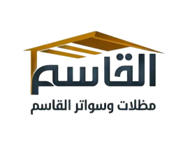
خبرة واسعة في تركيب جميع أنواع سواتر الأحواش 0532228615
2026 | سواتر احواش متخصصة قوة وتصميم وسرعة تركيب | أفضل تركيب سواتر بالرياض 0532228615
تُعتبر السواتر من العناصر الأساسية التي تسهم في تأمين المنازل والأحواش في مدينة الرياض. فهي لا توفر فقط الحماية، بل تساهم أيضًا في تعزيز الخصوصية والجمالية. في هذا المقال، سنستعرض أسعار متر السواتر وأنواعها وفوائد تركيبها مع أفضل تركيب سواتر بالرياض متخصصة في أعمال السواتر.
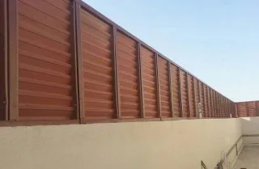
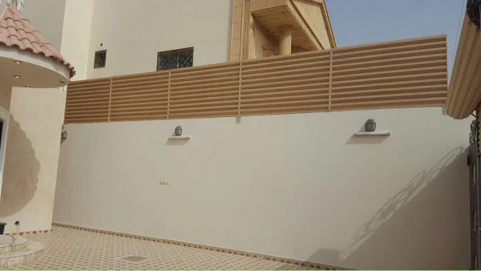
تختلف أسعار السواتر بناءً على المواد المستخدمة. مظلات وسواتر القاسم الحديثة تقدم مجموعة متنوعة من الخيارات بأسعار تنافسية في المملكة. يتميز العرض لدينا بتوفير أنواع متعددة من السواتر التي تناسب جميع الأذواق والاحتياجات، بالإضافة إلى استخدام مواد ذات جودة عالية تتحمل أقصى درجات الحرارة وتضفي لمسة جمالية على المكان. نحن أفضل تركيب سواتر بالرياض متخصصة في أعمال السواتر.
تشمل الخيارات المتاحة من أفضل تركيب سواتر بالرياض 0532228615:
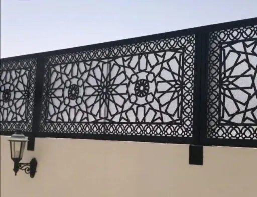
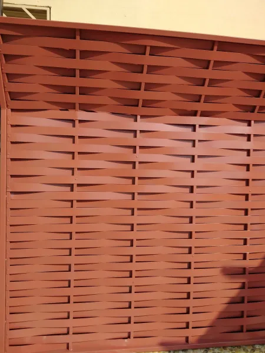
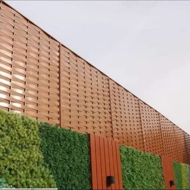
تتسم السواتر بالعديد من المميزات منها مع أفضل تركيب سواتر بالرياض 0532228615:
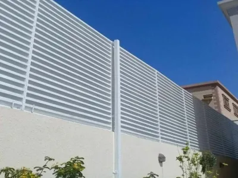
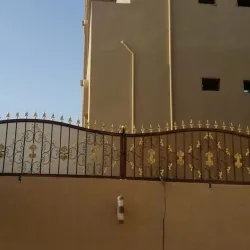
يتم تركيب السواتر بواسطة متخصصين من أفضل تركيب سواتر بالرياض 0532228615، حيث تبدأ العملية بتحديد المنطقة المناسبة ثم تجهيز الجدار. يشمل ذلك بناء هيكل معدني لتثبيت السواتر، وضع السواتر المصممة، ثم طلاءها بالمواد العازلة المناسبة.
تتميز مظلات وسواتر القاسم الحديثة بالرياض بوجود فريق محترف من العمالة المدربة على أعلى مستوى لتركيب السواتر بشكل احترافي. يتم تثبيت السواتر بطريقة تضمن مقاومتها للرياح، حيث يتم ربط الأجزاء بعضها ببعض وتثبيت أعمدة قوية لتوفير ثبات إضافي للجدران والأحواش 0532228615.
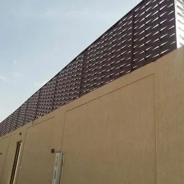
توجد عدة عوامل تؤثر على تكلفة تركيب السواتر في الرياض مع أفضل تركيب سواتر بالرياض 0532228615، منها:
تسعى مظلات وسواتر القاسم الحديثة لتقديم أفضل خيارات السواتر التي تلبي احتياجات العملاء. من أبرز المميزات كأفضل تركيب سواتر بالرياض 0532228615:
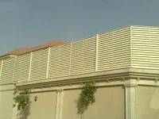
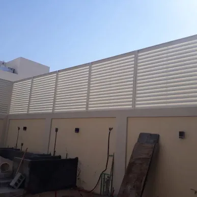
ننصح العملاء بالتالي قبل اتخاذ قرار التركيب مع أفضل تركيب سواتر بالرياض 0532228615:
تمثل سواتر الحديد المجدول حلاً مثالياً لحماية الأحواش في الرياض، حيث توفر مستوى عالياً من الأمان مع الحفاظ على الجمالية. تصنع هذه السواتر من حديد مجلفن عالي الجودة يتحمل الظروف المناخية القاسية في المملكة. نحن أفضل تركيب سواتر بالرياض متخصصة في أعمال السواتر 0532228615.
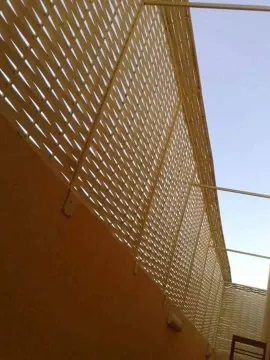
منع التسلل والحماية من السرقة الرياض 0532228615
تتحمل حرارة الرياض حتى 50°م 0532228615
طلاء حراري يمنع الصدأ لسنوات الرياض 0532228615
سواتر الأحواش الخشبية المعالجة من مظلات وسواتر القاسم الحديثة تمنح فناء منزلك مظهراً طبيعياً أنيقاً مع ضمان المتانة والعمر الافتراضي الطويل. نستخدم أخشاباً معالجة حرارياً ومقاومة للحشرات والعفن. نحن أفضل تركيب سواتر بالرياض متخصصة في أعمال السواتر 0532228615.
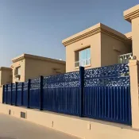
| نوع الخشب | العمر الافتراضي | مقاومة الحرارة |
|---|---|---|
| خشب الساج | 20+ سنة | ممتازة |
| خشب الصنوبر المعالج | 15 سنة | جيدة جداً |
| خشب الأرز الأحمر | 18 سنة | ممتازة |
عملية تركيب سواتر الأحواش في مظلات وسواتر القاسم الحديثة تتم وفق معايير احترافية تضمن الجودة والثبات. نبدأ بدراسة الموقع وتحديد نوع الساتر المناسب، ثم ننتقل إلى التنفيذ بفريق متخصص من أفضل تركيب سواتر بالرياض 0532228615.
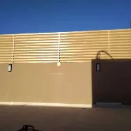
أخذ القياسات الدقيقة ودراسة التربة والظروف المناخية الرياض 0532228615
حفر الأساسات وتركيب القواعد الخرسانية المسلحة الرياض 0532228615
تركيب الأعمدة والهيكل الحديدي بزوايا مضبوطة الرياض 0532228615
الدهانات والطلاء الحراري وفحص الجودة النهائي الرياض 0532228615
في ظل الظروف المناخية في الرياض، نقدم سواتر أحواش مقاومة للصدمات والرياح بتقنيات حديثة تضمن ثباتها حتى في الرياح القوية. تستخدم مواد خاصة تزيد من مرونة ومتانة السور. نحن أفضل تركيب سواتر بالرياض متخصصة في هذا النوع من الأعمال 0532228615.
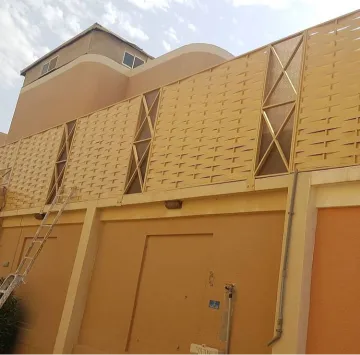
دعامات إضافية في الزوايا والمنتصف الرياض 0532228615
مسامير مقاومة للاهتزاز والارتخاء الرياض 0532228615
خليط من الحديد والبولي يوريثان الرياض 0532228615
نقدم في مظلات وسواتر القاسم الحديثة أحدث تصميمات سواتر الأحواش لعام 2026 التي تجمع بين الأناقة والعملية. تصاميم مستوحاة من أحدث الاتجاهات العالمية مع مراعاة البيئة المحلية في الرياض. نحن أفضل تركيب سواتر بالرياض متخصصة في التصميمات الحديثة 0532228615.
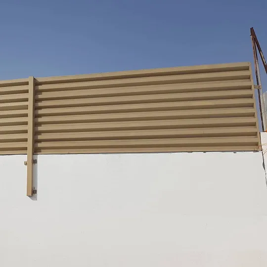
في مدينة الرياض، أصبحت سواتر الأحواش عنصراً أساسياً في أي منزل حديث، وليس مجرد اختيار ترفيهي. مع تزايد الكثافة السكانية وتغير أنماط الحياة، أصبحت الخصوصية والأمان أولوية قصوى لأصحاب المنازل. مظلات وسواتر القاسم الحديثة، برؤيتها المتطورة، تقدم حلولاً متكاملة تجعل من سور الحوش استثماراً ذكياً يحقق عوائد متعددة. نحن أفضل تركيب سواتر بالرياض متخصصة في أعمال السواتر 0532228615.
المكونات: حديد مجلفن بسمك 2-3 مم + طلاء إيبوكسي حراري + مجلفنة بالغمر الساخن
العمر الافتراضي: 15-20 سنة مع الصيانة المناسبة
التكلفة التقريبية: 95-150 ريال/متر (حسب الارتفاع والتصميم)
المكونات: خشب ساج أو أرز أحمر معالج بالضغط + طلاء مقاوم للعوامل الجوية
العمر الافتراضي: 12-18 سنة
التكلفة التقريبية: 185-280 ريال/متر
المكونات: صفائح معدنية مجلفنة مطلية + طبقة عازلة
العمر الافتراضي: 8-12 سنة
التكلفة التقريبية: 55-85 ريال/متر
الحديد vs الخشب vs الشينكو الرياض 0532228615
كل 50 سم زيادة = 15% زيادة في السعر الرياض 0532228615
تصاميم خاصة وزخارف مضافة الرياض 0532228615
طلاء خاص، إضاءة، أبواب إضافية الرياض 0532228615
| الاحتياج | النوع الموصى به | الارتفاع المناسب | نصائح إضافية |
|---|---|---|---|
| أمان عالي (فلل في أطراف المدينة) | حديد مجدول 3 مم | 2.5 - 3 متر | إضافة أسلاك شائكة في الأعلى الرياض 0532228615 |
| خصوصية (أحواش أمامية) | سواتر شرائح حديد | 1.8 - 2.2 متر | استخدام ألواح معدنية كاملة الرياض 0532228615 |
| جمالية (فلل فاخرة) | خشب ساج معالج | 2 - 2.5 متر | دمج مع إضاءة LED زخرفية الرياض 0532228615 |
| ميزانية محدودة | شينكو مجلفن | 1.5 - 2 متر | طلاء إضافي كل 3 سنوات الرياض 0532228615 |
✅ الإجابة: نعم، تحتاج تصريح من البلدية لتركيب أي سور يزيد ارتفاعه عن 1.5 متر. مظلات وسواتر القاسم الحديثة تقدم خدمة الحصول على التصاريح نيابة عنك كجزء من الخدمة الشاملة - أفضل تركيب سواتر بالرياض 0532228615.
✅ الإجابة: تتراوح المدة بين 3-10 أيام عمل حسب المساحة والتعقيد. متوسط المشروع (حواش 100 متر) يستغرق 5 أيام مع مظلات وسواتر القاسم الحديثة الرياض 0532228615.
✅ الإجابة: نعم، نقدم ضماناً شاملاً لمدة 5 سنوات على التركيب و3 سنوات على المواد ضد عيوب الصناعة الرياض 0532228615.
اتصل بنا على 0532228615 الرياض
فريق فني يزور موقعك مجاناً الرياض 0532228615
عرض مفصل خلال 24 ساعة الرياض 0532228615
تنفيذ في الوقت المحدد الرياض 0532228615